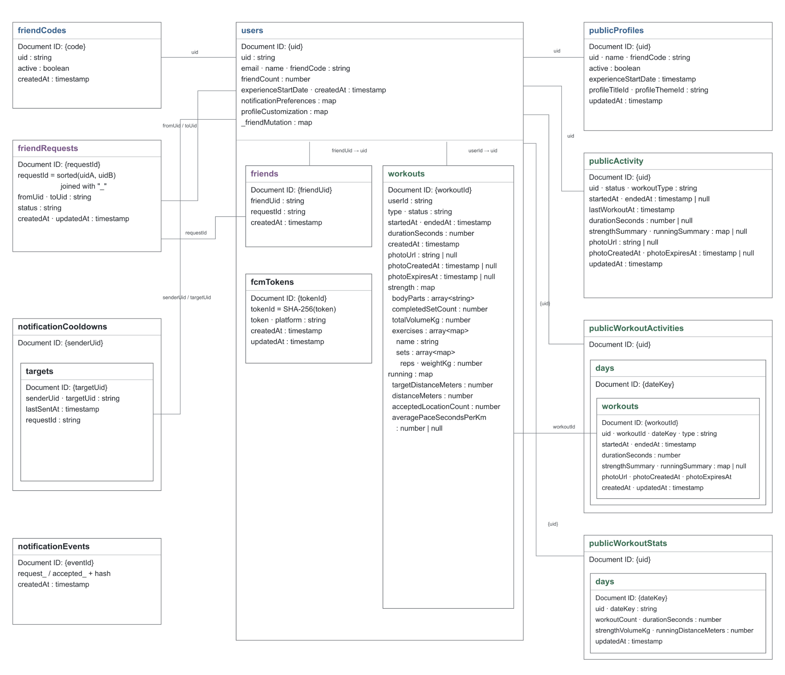
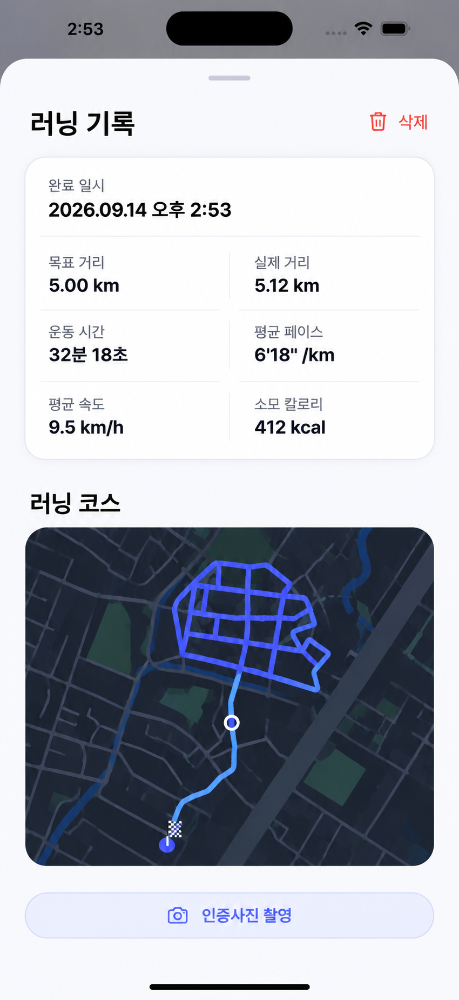
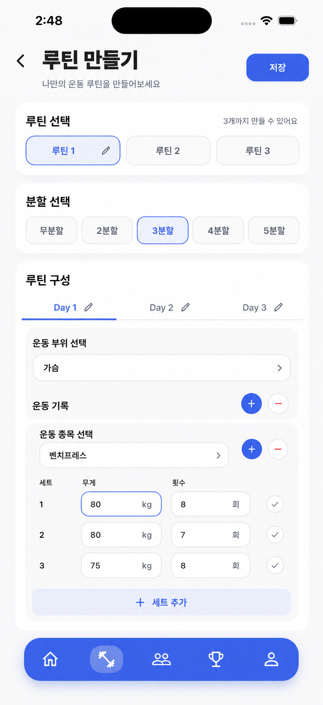
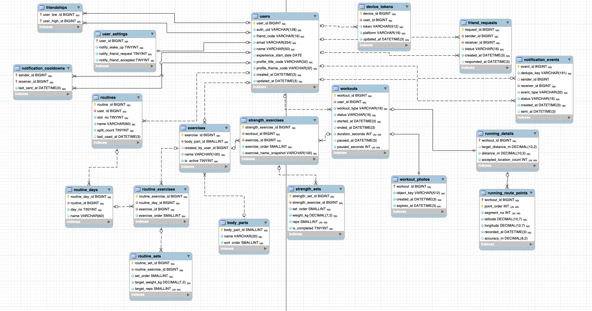

이번 주
기존 Firebase 데이터 구조를 분석한 뒤, 신규 기능에 필요한 데이터까지 함께 고려하여 MySQL 기반 데이터 구조와 ERD 설계 완료
Firebase 구조 분석
기존 Firestore의 컬렉션, 문서, 서브컬렉션 구조와 각 데이터가 실제 기능에서 어떻게 사용되는지 분석함
중복 데이터 확인
공개용 데이터, 통계 데이터 등 동일한 정보가 여러 위치에 반복 저장되는 부분을 확인함
신규 기능 구체화
러닝 코스 표시와 운동 루틴 생성·공유·복사 기능에 필요한 데이터를 정리함
MySQL ERD 설계
기존 데이터와 신규 기능 데이터를 종합해 관계형 DB 구조로 다시 설계함
기존 Firebase 데이터 구조 분석
기존 ShareFit은 Firebase Auth, Firestore, Storage, FCM을 사용하고 있으며, Firestore는 기능별 조회 편의를 위해 일부 데이터를 중복 저장하고 있었음

주요 구조
사용자 / 친구
users, friendCodes, publicProfiles, friendRequests, friends 등의 구조로 관리
운동 기록
workouts 문서 내부에 strength와 running 데이터를 Map / Array 형태로 중첩 저장
공개 데이터 / 통계
publicActivity, publicWorkoutActivities, publicWorkoutStats 등에 조회용 데이터를 별도로 저장
기존 데이터 구조에서 정리한 부분
Firestore에서는 빠른 조회를 위해 같은 데이터를 여러 문서에 저장할 수 있지만, MySQL에서는 관계와 JOIN을 이용할 수 있기 때문에 원본 데이터를 중심으로 구조를 단순화함
중복 데이터 통합
| 기존 Firebase | MySQL 변경 방향 |
|---|---|
| friendCodes | users.friend_code로 통합 |
| publicProfiles | users에서 필요한 정보만 조회 |
| publicActivity | workouts 및 상세 테이블에서 조회 |
| publicWorkoutActivities | 원본 운동 기록에서 조회 |
| publicWorkoutStats | 운동 기록을 기준으로 계산 |
계산 가능한 데이터
추가 기능 계획
기존 ShareFit 기능에 신규 기능도 함께 설계했다.
01. 러닝 코스 기록
- 러닝 중 GPS 위치 좌표 저장
- 운동 종료 후 실제 이동 코스 표시
- 위도·경도와 좌표 순서를 DB에 저장
- 일시정지 구간을 segment로 구분
02. 운동 루틴
- 사용자당 최대 3개 루틴 구성
- 무분할,2~5분할 Day 구성
- Day별 종목·세트·목표 중량 설정
- 최근 사용 루틴 우선 추천
- 친구 루틴 조회 및 복사


MySQL 구조 설계 방향
Firestore의 문서·배열 구조를 그대로 복사하지 않고, 데이터의 역할과 관계를 기준으로 테이블을 분리함
사용자 / 친구 / 알림
users를 중심으로 친구 관계, 요청, 알림 설정과 기기 토큰을 관계형 구조로 연결했다.
헬스 기록
운동 1회 → 종목 → 세트의 1:N 관계를 기준으로 strength_exercises와 strength_sets로 분리했다.
러닝 기록
러닝 전체 정보는 running_details, 실제 이동 경로는 running_route_points로 분리했다.
루틴
실제 수행 기록과 계획 데이터를 분리하여 루틴 수정이 과거 운동 기록에 영향을 주지 않도록 설계했다.
헬스 데이터 구조
루틴 데이터 구조
최종 MySQL ERD
기존 Firebase 데이터, 중복 제거 결과, 신규 러닝·루틴 기능에 필요한 데이터를 종합하여 현재 19개 테이블 기준으로 ERD를 구성함

테이블
현재 기능과 신규 기능을 포함한 최종 데이터 구조
신규 기능
러닝 코스 기록과 루틴 생성·복사 기능
중복 제거
중복 복사본 대신 원본 데이터를 기준으로 조회
Firebase에 맞춰져 있던 구조를 Spring Boot + MySQL 환경에서 사용할 수 있는 관계형 데이터 구조로 재설계했다.
다음 진행 계획
실제 Spring Boot 서버 구현을 위한 설계 단계로 넘어갈 예정
API 기능 정의
사용자, 친구, 운동, 루틴, 러닝 기능별로 필요한 REST API를 정리
Spring Boot 구조 설계
Controller, Service, Repository, Entity 구조와 데이터 흐름을 설계
MySQL 와 Spring Boot 구현 시작
MySQL 테이블을 생성하고 Spring Boot 프로젝트와 연동해 실제 서버 구현을 시작함